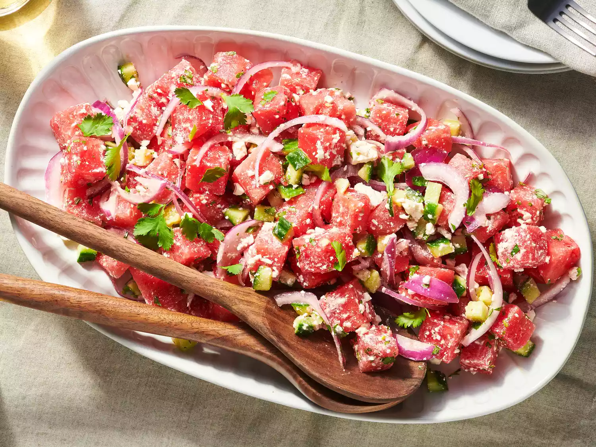

Watermelon Salad

Description
This watermelon salad is a surprising yet delicious combination of juicy watermelon, red onion, cucumber, and feta cheese. The perfect appetizer or light meal on a hot summer day.
Ingredients
- Lime juice
- Watermelon
- Cucumber
- Feta
- Herbs and seasonings
Steps:
- Gather the ingredients.
- Place red onion slices in a small bowl; pour over lime juice. Allow onions to marinate while assembling the salad.
- Gently combine watermelon, cucumber, feta cheese, and cilantro in a large bowl; season with black pepper.
- Toss watermelon salad with marinated onions and season with sea salt just before serving.
- Serve and enjoy!